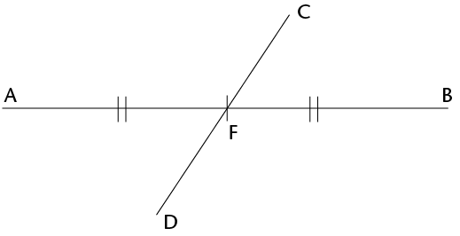
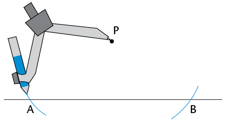
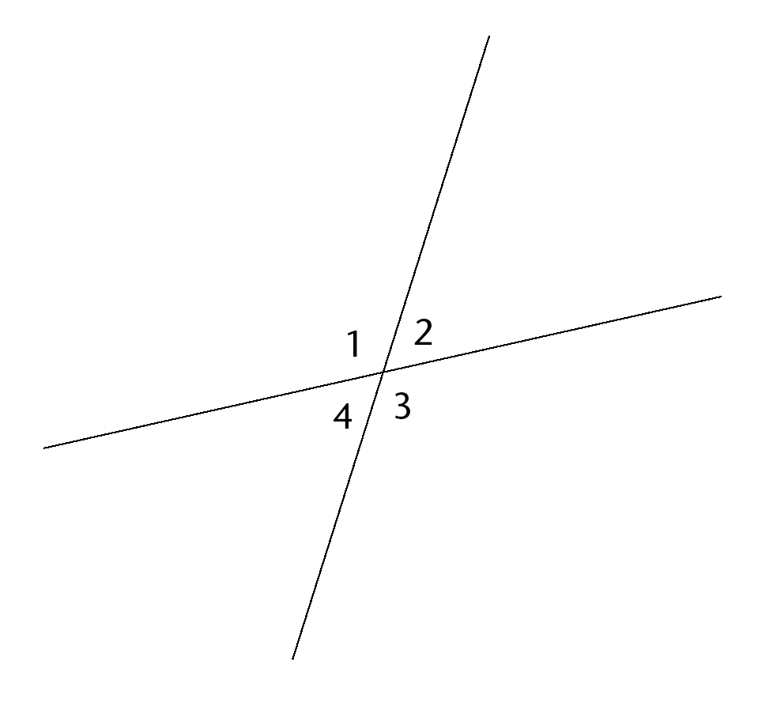
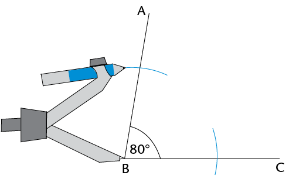
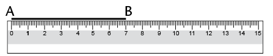
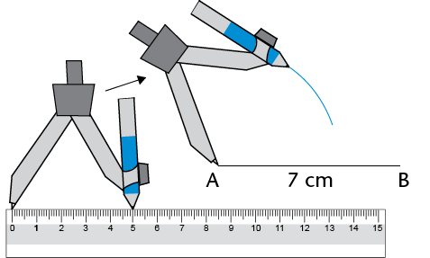
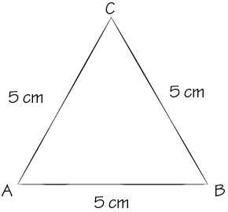
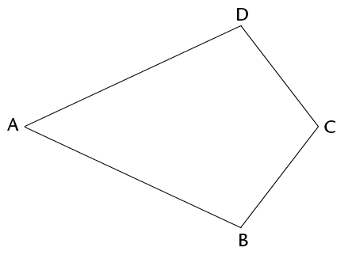
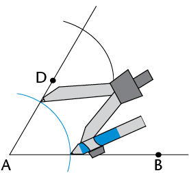
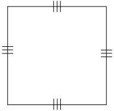

Construction of geometric figures
In this chapter, you will learn how to construct, or draw, different lines, angles and shapes. You will use drawing instruments, such as a ruler, to draw straight lines, a protractor to measure and draw angles, and a compass to draw arcs that are a certain distance from a point. Through the various constructions, you will investigate some of the properties of triangles and quadrilaterals; in other words, you will find out more about what is always true about all or certain types of triangles and quadrilaterals.
Bisecting lines
When we construct, or draw, geometric figures, we often need to bisect lines or angles.Bisect means to cut something into two equal parts. There are different ways to bisect a line segment.
Bisecting a line segment with a ruler
- Read through the following
steps.
Step 1: Draw line segment AB and determine its midpoint.

Step 2: Draw any line segment through the midpoint.

The small marks on AF and FB show that AF and FB are equal.
CD is called a bisector because it bisects AB. AF = FB.
- Use a ruler to draw
and bisect the following line segments: AB = 6 cm and XY = 7
cm.
In Grade 6, you learnt how to use a compass to draw circles, and parts of circles called arcs. We can use arcs to bisect a line segment.
Bisecting a line segment with a compass and ruler
- Read through the following
steps.
Step 1
Place the compass on one endpoint of the line segment (point A). Draw an arc above and below the line. (Notice that all the points on the arc aboveand below the line are the same distance from point A.)

Step 2
Without changing the compass width, place the compass on point B. Draw an arc above and below the line so that the arcs cross the first two. (The two points where the arcs cross are the same distance away from point A and from point B.)

Step 3
Use a ruler to join the points where the arcs intersect.This line segment (CD) is the bisector of AB.

Intersect means to cross or meet.
A perpendicular is a line that meets another line at an angle of 90°.
Notice that CD is also perpendicular to AB. So it is also called a perpendicular bisector.
- Work in
your exercise book. Use a compass and a ruler to practise
drawing perpendicular bisectors on line segments.
Try this!
Work in your exercise book. Use only a protractor and ruler to draw a perpendicular bisector on a line segment. (Remember that we use a protractor to measure angles.)
Constructing perpendicular lines
A perpendicular line from a given point
- Read through the following
steps.
Step 1
Place your compass on the given point (point P). Draw an arc across the line on each side of the given point. Do not adjust the compass width when drawing the second arc.

Step 2
From each arc on the line, draw another arc on the opposite side of the line from the given point (P). The two new arcs will intersect.

Step 3
Use your ruler to join the given point (P) to the point where the arcs intersect (Q).

PQ is perpendicular to AB. We also write it like this: PQ ⊥ AB.
- Use your compass and
ruler to draw a perpendicular line from each given point to the
line segment:


A perpendicular line at a given point on a line
- Read through the following
steps.
Step 1
Place your compass on the given point (P). Draw an arc across the line on each side of the given point. Do not adjust the compass width when drawing the second arc.

Step 2
Open your compass so that it is wider than the distance from one of the arcs to the point P. Place the compass on each arc and draw an arc above or below the point P. The two new arcs will intersect.

Step 3
Use your ruler to join the given point (P) and the point where the arcs intersect (Q).
PQ ⊥ AB

- Use your compass and ruler to
draw a perpendicular at the given point on each line:
Bisecting angles
Angles are formed when any two lines meet. We use degrees (°) to measure angles.
Measuring and classifying angles
In the figures below, each angle has a number from 1 to 9.
- Use a protractor to
measure the sizes of all the angles in each figure. Write your
answers on each figure.
-

-
-
- Use your answers to fill in
the angle sizes below.
\(\hat{1} = \text{_______} ^{\circ}\)
\(\hat{1} + \hat{2} = \text{_______} ^{\circ}\)
\(\hat{1} + \hat{4} = \text{_______} ^{\circ}\)
\(\hat{2} + \hat{3} = \text{_______} ^{\circ}\)
\(\hat{3} + \hat{4} = \text{_______} ^{\circ}\)
\(\hat{1} + \hat{2} + \hat{4} = \text{_______} ^{\circ}\)
\(\hat{1} + \hat{2} + \hat{3} + \hat{4} = \text{_______} ^{\circ}\)
\(\hat{6} = \text{_______} ^{\circ}\)
\(\hat{7} + \hat{8} = \text{_______} ^{\circ}\)
\(\hat{6} + \hat{7} + \hat{8} = \text{_______} ^{\circ}\)
\(\hat{5} + \hat{6} + \hat{7} = \text{_______} ^{\circ}\)
\(\hat{6} + \hat{5} = \text{_______} ^{\circ}\)
\(\hat{5} + \hat{6} + \hat{7} + \hat{8} = \text{_______} ^{\circ}\)
\(\hat{5} + \hat{6} + \hat{7} + \hat{8} + \hat{9} = \text{_______} ^{\circ}\)
- Next to each answer above, write down what type of angle it is, namely acute, obtuse, right, straight, reflex or a revolution.
Bisecting angles without a protractor
- Read through the following
steps.
Step 1
Place the compass on the vertex of the angle (point B). Draw an arc across each arm of the angle.
Step 2
Place the compass on the point where one arc crosses an arm and draw an arc inside the angle. Without changing the compass width, repeat for the other arm so that the two arcs cross.

Step 3
Use a ruler to join the vertex to the point where the arcs intersect (D).
DB is the bisector of \(\hat{ABC}\).

- Use your compass and ruler to
bisect the angles below.

You could measure each of the angles with a protractor to check if you have bisected the given angle correctly.
Constructing special angles without a protractor
Constructing angles of and
- Read through the following
steps.
Step 1
Draw a line segment (JK). With the compass on point J, draw an arc across JK and up over above point J.

Step 2
Without changing the compass width, move the compass to the point where the arc crosses JK, and draw an arc that crosses the first one.

Step 3
Join point J to the point where the two arcs meet (point P). \(\hat{PJK}\) = 60°

When you learn more about the properties of triangles later, you will understand whythe method above creates a 60° angle. Or can you already work this out now? (Hint: What do you know about equilateral triangles?)
-
- Construct an angle of 60° at point B below.
- Bisect the angle you constructed.
- Do you notice that the bisected angle consists of two 30° angles?
- Extend line
segment BC to A. Then measure the angle adjacent to the
60° angle.
Adjacent means "next to".
What is its size?
- The 60° angle
and its adjacent angle add up to

Constructing angles of and
- Construct an angle of 90° at point A. Go back to section 10.2 if you need help.
- Bisect the
90° angle, to create an angle of 45°. Go
back to section 10.3 if you need help.

Challenge
Work in your exercise book. Try to construct the following angles without using a protractor: 150°, 210° and 135°.
Constructing triangles
In this section, you will learn how to construct triangles. You will need a pencil, a protractor, a ruler and a compass.
A triangle has three sides and three angles. We can construct a triangle when we know some of its measurements, that is, its sides, its angles, or some of its sides and angles.
Constructing triangles
Constructing triangles when three sides are given
- Read through the
following steps. They describe how to construct \( \triangle ABC\)
with side lengths of 3 cm, 5 cm and 7 cm.
Step 1
Draw one side of the triangle using a ruler. It is often easier to start with the longest side.

Step 2
Set the compass width to 5 cm. Draw an arc 5 cm away from point A. The third vertex of the triangle will be somewhere along this arc.

Step 3
Set the compass width to 3 cm. Draw an arc from point B. Note where this arc crosses the first arc. This will be the third vertex of the triangle.

Step 4
Use your ruler to join points A and B to the point where the arcs intersect (C).

- Work in your exercise
book. Follow the steps above to construct the following
triangles:
- \( \triangle ABC\) with sides 6 cm, 7 cm and 4 cm
- \(\triangle KLM\) with sides 10 cm, 5 cm and 8 cm
- \(\triangle PQR\) with sides 5 cm, 9 cm and 11 cm
Constructing triangles when certain angles and sides are given
- Use the rough sketches
in (a) to (c) below to construct accurate triangles, using a
ruler, compass and protractor. Do the construction next to each
rough sketch.
- The dotted lines show where you have to use a compass to measure the length of a side.
- Use a protractor to measure the size of the given angles.
- Construct \( \triangle ABC\), with two
angles and one side given.

- Construct a \(\triangle KLM\), with two
sides andan angle given.

- Construct right-angled \(\triangle PQR\),
with thehypotenuse and one other side given.

- Measure the missing angles and sides of each triangle in 3(a) to (c) on the previous page. Write the measurements at your completed constructions.
- Compare each of your constructed triangles in 3(a) to (c) with a classmate's triangles. Are the triangles exactly the same?
If triangles are exactly the same, we say they are congruent.
Challenge
- Construct these triangles:
- \( {\triangle}\text{STU}\), with three angles given: \(S = 45^{\circ}\), \(T = 70^{\circ}\) and \(U = 65^{\circ}\) .
- \( {\triangle}\text{XYZ}\), with two sides and the angle opposite one of the sides given: \(X = 50^{\circ}\) , \(XY = 8 \text{ cm}\) and \(XZ = 7 \text{ cm}\).
- Can you find more than one solution for each triangle above? Explain your findings to a classmate.
Properties of triangles
The angles of a triangle can be the same size or different sizes. The sides of a triangle can be the same length or different lengths.
Properties of equilateral triangles
-
- Construct \( \triangle ABC\) next to its rough sketch below.
- Measure and label the
sizes of all its sides and angles.

-
Measure and write down the sizes of the sides and angles of
\({\triangle}DEF\) below.

- Both triangles in
questions 1 and 2 are called equilateral triangles.
Discuss with a classmate if the following is true for an
equilateral triangle:
- All the sides are equal.
- All the angles are equal to 60°.
Properties of isosceles triangles
-
- Construct \({\triangle}\text{DEF}\) with \(EF = 7
\text{cm}, ~\hat{E} = 50^{\circ} \) and \(\hat{F} = 50^{\circ}\).
Also construct \({\triangle}\text{JKL}\) with \(JK = 6 \text{cm},~KL = 6 \text{cm}\) and \(\hat{J}=70^{\circ}\).
- Measure and label all the sides and
angles of each triangle.
- Construct \({\triangle}\text{DEF}\) with \(EF = 7
\text{cm}, ~\hat{E} = 50^{\circ} \) and \(\hat{F} = 50^{\circ}\).
- Both triangles above
are called isosceles triangles. Discuss with a classmate
whether the following is true for an isosceles triangle:
- Only two sides are equal.
- Only two angles are equal.
- The two equal angles are opposite the two equal sides.
The sum of the angles in a triangle
-
Look at your constructed triangles \({\triangle}\text{ABC},~{\triangle}\text{DEF}
\) and \({\triangle}\text{JKL}\) above and on the previous page. What is the
sum of the three angles each time?
- Did you find that the
sum of the interior angles of each triangle is 180°?
Do the following to check if this is true for other
triangles.
- On a clean sheet of paper, construct any
triangle. Label the angles A, B and C and cut out the
triangle.

- Neatly tear the angles off the triangle and fit them next to one another.
- Notice that \(\hat{A} + \hat{B} + \hat{C} = \text{______}^{\circ}\)
- On a clean sheet of paper, construct any
triangle. Label the angles A, B and C and cut out the
triangle.
We can conclude that the interior angles of a triangle always add up to 180°.
Properties of quadrilaterals
A quadrilateral is any closed shape with four straight sides. We classify quadrilaterals according to their sides and angles. We note which sides are parallel, perpendicular or equal. We also note which angles are equal.
Properties of quadrilaterals
- Measure and write down the
sizes of all the angles and the lengths of all the sides of
each quadrilateral below.
Square

Rectangle

Parallelogram
Rhombus

Trapezium

Kite

- Use your answers in
question 1. Place a â in the correct box below to show which property is correct for each
shape.
Properties
Parallelogram
Rectangle
Rhombus
Square
Kite
Trapezium
Only one pair of sides are parallel
Opposite sides are parallel
Opposite sides are equal
All sides are equal
Two pairs of adjacent sides are equal
Opposite angles are equal
All angles are equal
Sum of the angles in a quadrilateral
- Add up the four angles
of each quadrilateral on the previous page. What do you notice
about the sum of the angles of each quadrilateral?
- Did you find that the
sum of the interior angles of each quadrilateral equals
360°? Do the following to check if this is true for
other quadrilaterals.
- On a clean sheet of paper, use a ruler to construct any quadrilateral.
- Label the angles A, B, C and D. Cut out the quadrilateral.
- Neatly tear the angles off the quadrilateral and fit them next to one another.
- What do you notice?
We can conclude that the interior angles of a quadrilateral always add up to 360°.
Constructing quadrilaterals
You learnt how to construct perpendicular lines in section 10.2. If you know how to construct parallel lines, you should be able to construct any quadrilateral accurately.
Constructing parallel lines to draw quadrilaterals
- Read through the following
steps.
Step 1
From line segment AB, mark a point D. This point D will be on the line that will be parallel to AB. Draw a line from A through D.

Step 2
Draw an arc from A that crosses AD and AB. Keep the same compass width and draw an arc from point D as shown.

Step 3
Set the compass width to the distance between the two points where the first arc crosses AD and AB. From the point where the second arc crosses AD, draw a third arc to cross the second arc.

Step 4
Draw a line from D through the point where the two arcs meet. DC is parallel to AB.

- Practise drawing a parallelogram, square and rhombus in your exercise book.
- Use a protractor to try to draw quadrilaterals with at least one set of parallel lines.
- Do the following construction in
your exercise book.
- Use a compass and ruler to construct equilateral \( \triangle ABC\) with sides 9 cm.
- Without using a protractor, bisect \(\hat{B}\). Let the bisector intersect AC at point D.
- Use a protractor to measure \(\hat{ADB}\). Write the measurement on the drawing.
- Name the following types of
triangles and quadrilaterals.
-

-

-

-

-

-

-
- Which of
the following quadrilaterals matches each description below?
(There may be more than one answer for each.)
parallelogram; rectangle; rhombus; square; kite; trapezium
-
All sides are equal and all angles are equal.
-
Two pairs of adjacent sides are equal.
-
One pair of sides is parallel.
-
Opposite sides are parallel.
-
Opposite sides are parallel and all angles are equal.
- All sides are
equal.
-
All sides are equal and all angles are equal.